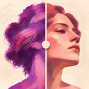
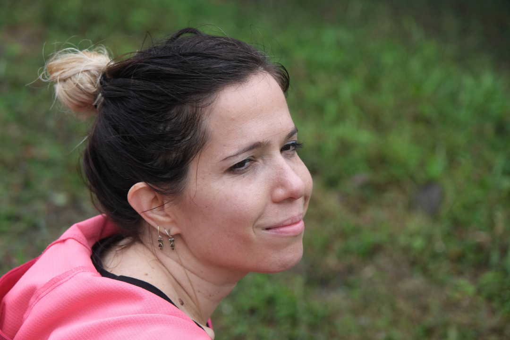
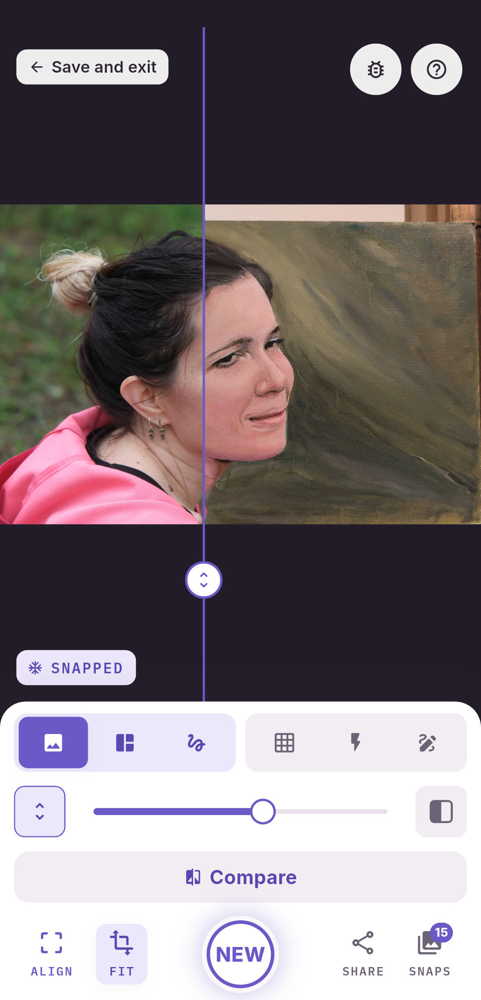
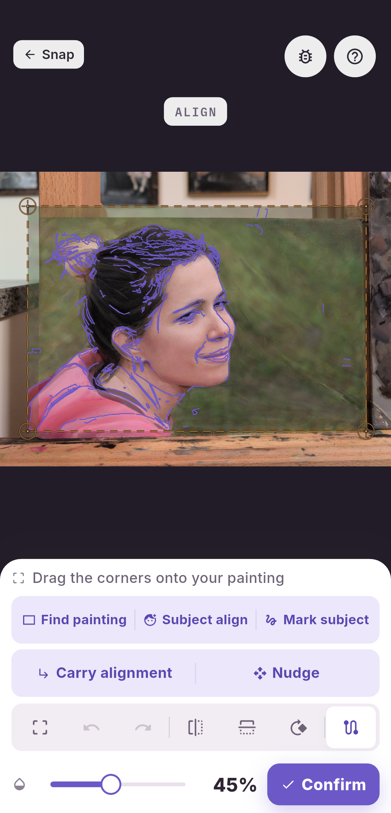
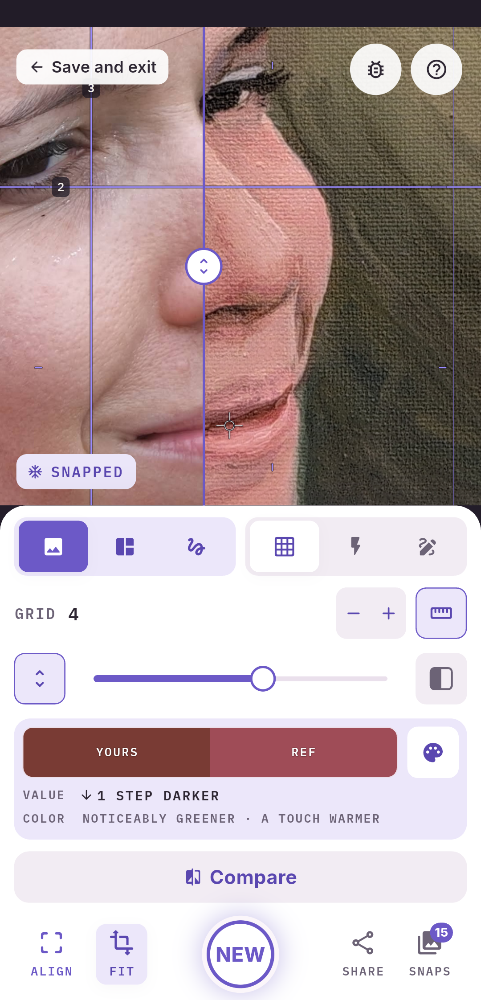
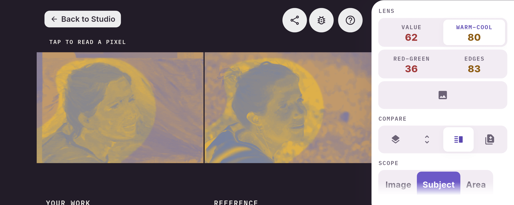
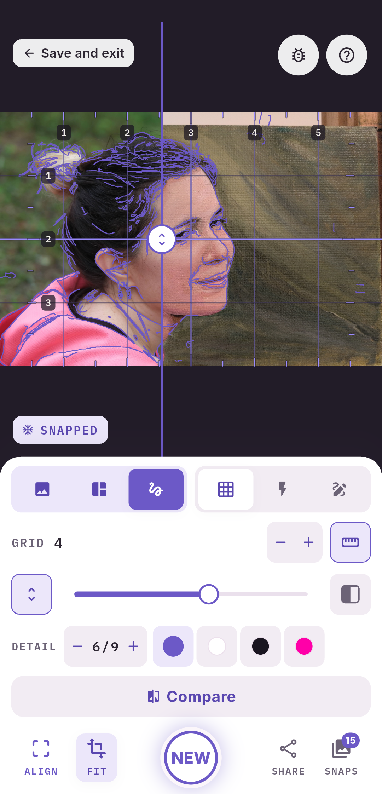
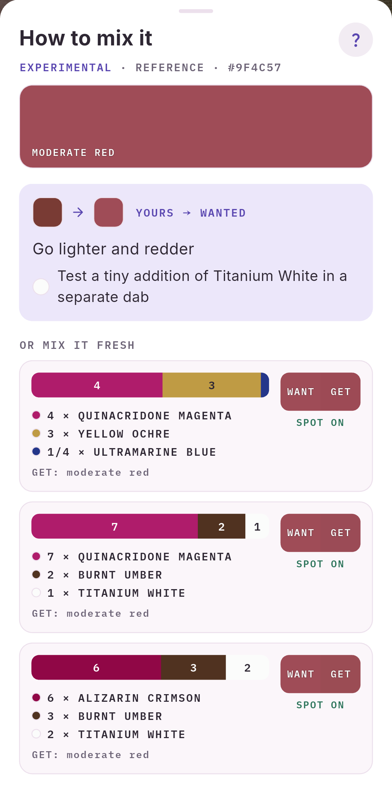
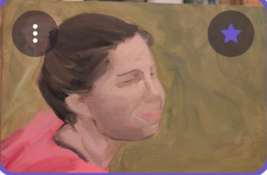

A comparison to discuss
Save or share an Analysis sheet with the reference, your newest snap, the comparison lenses and your timeline.

PaintPhase Get early accessPhotograph your canvas. Line it up with your reference. See differences in proportions, values and colour, then get back to painting.
Free for 6 projects.Every tool included Android phones & tablets · Early access by email
Slide between your painting and its reference. The places where they differ become easier to see.
SWIPE THROUGH THE SESSION →

Photograph your painting.

Drag 4 corners — or tap Find painting .

Slide between painting and reference. Tap a spot to compare its colour in both pictures.
The beaker marks experimental tools. Check the corners suggested by Find painting before comparing.
Start with the question you have about your painting. Choose a lens that makes that relationship easier to examine.

PaintPhase helps you see. The painting is yours.
See the contours with Edges and a grid, or reduce the reference to broad masses with Poster. Try the two views below.
Follow the main contours. Use the numbered grid to check where they meet.
Want to practise, or don’t have a reference ready? Choose one of the classic paintings included in PaintPhase. Explore its shapes and values, or use it as the reference for your own study.

See the colours in your picture with Poster, then explore how to mix them with the paints you own.
Experimental recipes. Try a separate dab, then judge by eye.

From the first marks to the finishing touches. Play back your saved snaps in Timeline and see how far you’ve come.
Revisit starred milestones, read your notes and play voice notes from earlier sessions. Share the saved stages as an animated GIF.
ONE PAINTING. EVERY PHASE.
TIMELINE · YOUR PAINTING GROWING
Your projects live on your device, without a PaintPhase cloud account. You choose when to export or share them. No ads or behavioural tracking.
Read the privacy policyFree for six projects, every tool included. One purchase removes the project limit.
Ask for early access ↓The optional lifetime purchase lets you keep starting new projects. The app shows your local price before you buy.
A project counts when you save its fourth snap. Once counted, deleting snaps or the project does not restore that free project. Your existing projects stay accessible.
It is a companion for traditional painting from a reference: oils, acrylics, watercolour, gouache, pastel and other media. Your painting stays on the canvas or paper; PaintPhase helps you examine it.
No. Photograph your painting, adjust its alignment and compare the still image. You can preview the reference over the camera view before taking the photo.
Early access is currently on Android phones and tablets. There is no iPhone or iPad release available yet.
Use them as a guide. Room light, reflections and the camera affect what the phone sees. Compare under even lighting and check the real painting by eye. Paint-mixing recipes are experimental starting points: test a separate dab first.
Every tool is included. A project uses one of the six free projects when you save its fourth snap. That use is permanent: deleting snaps or projects does not give it back. One optional purchase removes the limit on creating projects.
On your device. There is no PaintPhase cloud account. Export a backup in Settings and keep a copy somewhere safe, especially before changing phones or uninstalling. Sharing a sheet, picture or reel is your choice.
Use the early-access button to open an email to Barak. He will reply with the invitation steps for Android. The website does not submit a form or subscribe you to a mailing list.
PaintPhase is made by Barak Segal in Switzerland. The portrait at the top of this page is his painting, shown alongside its reference.
During early access, send Barak what helped, what was confusing, and what you needed at the easel.
Bring a reference and a photo of your painting.
Try every tool on your Android phone or tablet.
Free for six projects, every tool included.
One purchase removes the project limit. No subscription, no ads, no account.